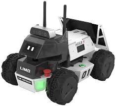
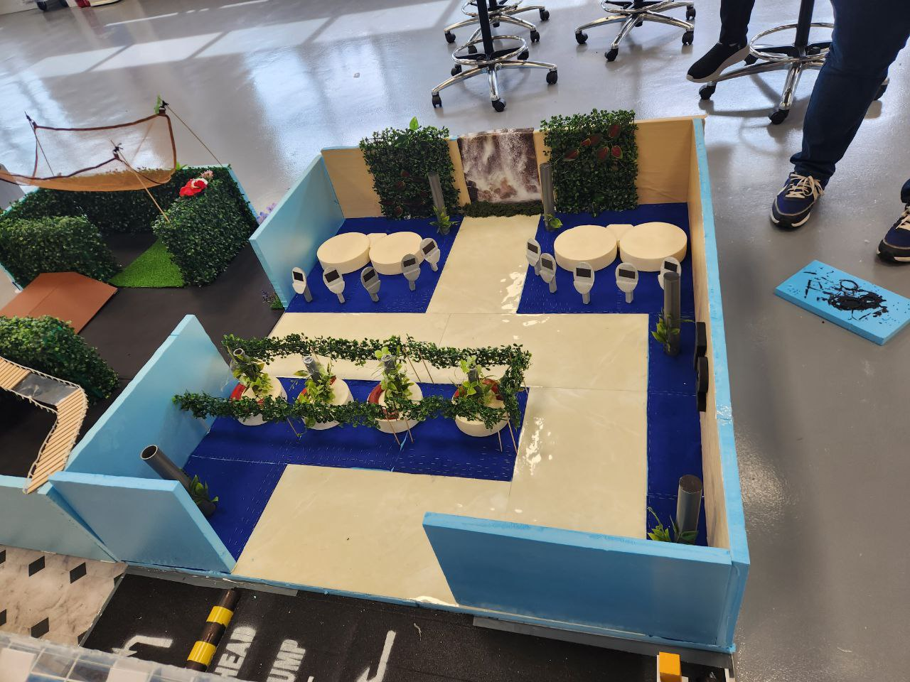

I am a computer engineering graduate from Ngee Ann Polytechnic, specializing in network systems and security. During my studies, I developed a strong foundation in programming, particularly in C and C++, while also gaining hands-on experience in networking, including configuring and programming routers. As part of my academic journey, I collaborated on a project with Dialogue in the Dark, where I worked with microcontrollers to simulate the experiences of individuals with visual impairments. This project enhanced my problem-solving skills and deepened my understanding of embedded systems. Currently, I am pursuing a degree in Systems Engineering at the Singapore Institute of Technology, majoring in Robotics Systems. My goal is to expand my expertise in automation and intelligent systems while applying my technical knowledge to real-world engineering challenges. I am always eager to take on new opportunities and challenges in the fields of networking, robotics, and systems engineering. My guiding principle is to trust the process and stay resilient in the face of obstacles. Skills & Expertise: Computer Programming (C, C++) Network Systems and Security Embedded Systems and Microcontrollers Robotics Systems Engineering Problem-Solving & Logical Thinking Teamwork and Collaborationt.

The LIMO Robot project focuses on autonomous navigation using ROS (Robot Operating System). The robot is programmed to explore and map a maze-like environment, utilizing real-time sensor data for localization and obstacle avoidance.

This project involves designing and constructing a maze-like arena inspired by Changi Airport Terminal 2, tailored for LIMO Robot navigation and testing.
Email: kavindren27@gmail.com